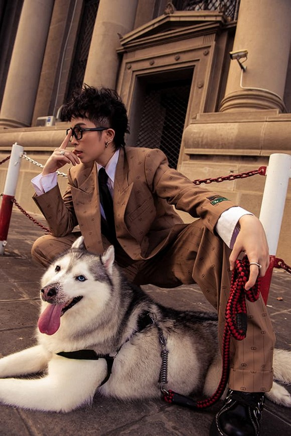
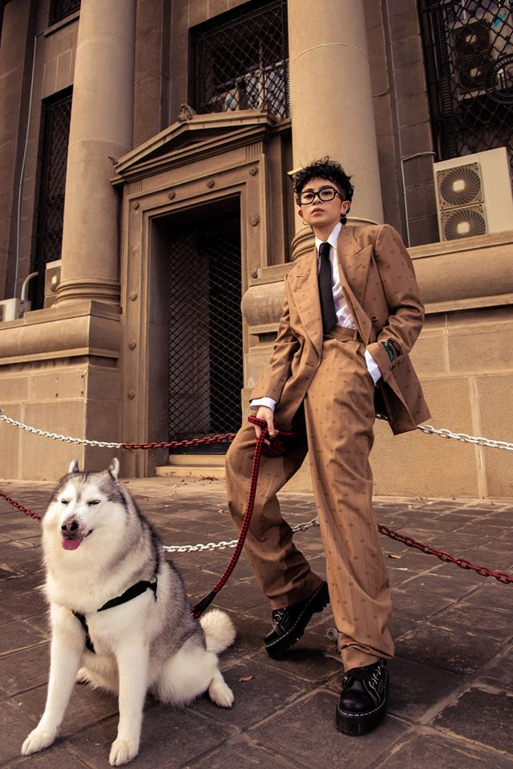

Mới đây, Gil Lê khiến người hâm mộ đứng ngồi không yên với phong thái tổng tài lịch lãm nhưng lại đầy cá tính trong bộ hình street style. Gil Lê thực hiện bộ ảnh lịch lãm, cá tính bên chú cún cưng nhân kỷ niệm 10 năm gắn bó.
Gil cho biết bản thân vốn yêu thích động vật nên từ nhỏ đã ao ước được nuôi một em thú cưng trong nhà. Thế nhưng ba mẹ của Gil thì không thích điều này, nên cho đến khi có một người bạn tặng Mocha, Gil đã dùng hết mọi cách để thuyết phục ba mẹ được chăm sóc em ấy. Ban đầu, mẹ của Gil còn đinh ninh Mocha là một em cún bé xinh, đến khi Gil ôm Mocha về nhà thì bà mới vỡ lẽ, còn dè dặt hỏi ‘nó là sói à?’ khiến Gil và bố bật cười.
Giống như cô chủ cá tính và mạnh mẽ, chú chó của Gil Lê thuộc họ Alaskan Husky, đồ sộ và có vẻ khá hung dữ. Thế nhưng, Mocha (tên thú cưng do Gil Lê đặt) lại thông minh, có thể nghe hiểu những gì cô nói và đôi khi còn lầm tưởng bản thân là... con người.
Với bề ngoài là một trong những loài thú cưng có kích thước lớn nhưng tính cách hiền lành, đáng yêu và đặc biệt có khuôn mặt cực biểu cảm nên được rất nhiều người yêu mến và muốn sở hữu ngay một chú pet này để bầu bạn. Husky có rất nhiều màu và thường gặp nhiều nhất là màu đen trắng, nâu đỏ, xám, hồng phấn, màu trắng và màu “agouti”. Tuy có nhiều màu nhưng đa phần vùng lông ở các bộ phận như chân, mõm, đốm cuối đuôi thường là màu trắng.
Đặc biệt với chú Mocha của Gil thì lại khá nghịch ngợm và bướng bỉnh nhưng vẫn được Gil hết sức cưng chiều.
Là người nổi tiếng, sao Việt lúc nào cũng rất bận rộn với lịch trình công việc dày đặc. Điều này khiến không ít nghệ sĩ trở nên vô cùng áp lực và mệt mỏi. Chỉ đến khi trở về nhà, họ mới thực sự có không gian cho riêng mình. Chính vì vậy mà ngoài công việc ra thì Gil-lê luôn có một tình yêu đặc biệt dành cho cô bé Mocha của mình.
Nếu bạn cũng có một chú Alaska Husky giống Gil- Lê thì hãy share hoặc cmt để Minipet biết nhé.